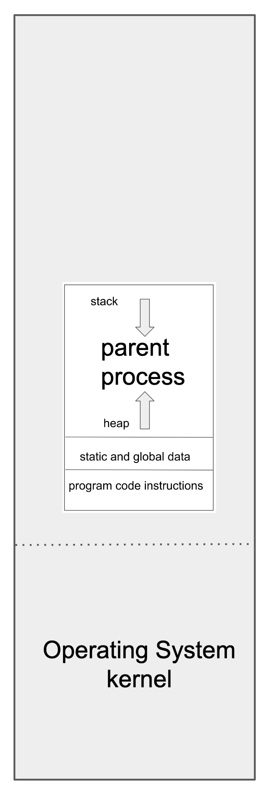
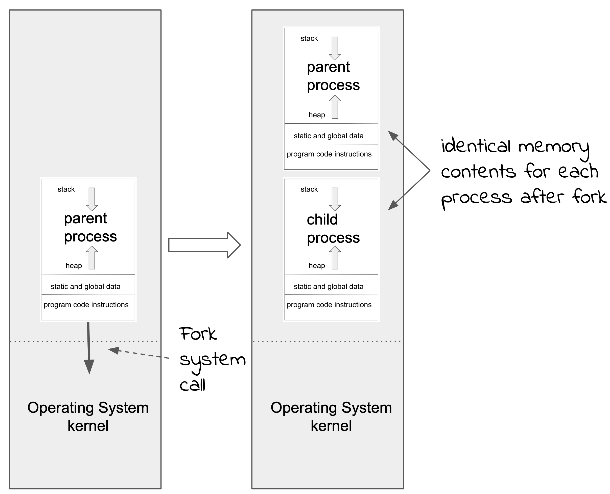
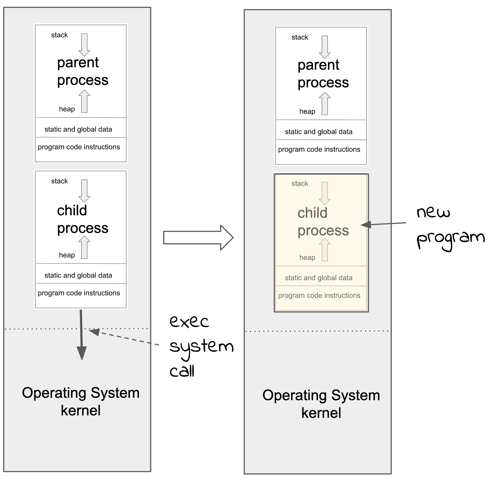

3.3 Managing Processes¶
Given that we have a program (instructions and data) stored in a file on mass storage, how do we get it loaded into memory and started?
This is done by an existing running program, using system calls to request that the new program is started with the code coming from a specified file.
You might be wondering how all this is started. How does the very first program get started before there are any other programs. I’ll talk about how a Linux system starts up in a later chapter but the simple answer is that the very first program is created by the operating system when is starting up. Then it is the job of that program to start further programs and so on.
Many systems, and certainly the early operating systems, have a system call that has parameters specifying the file that contains the program and any arguments to pass to the program. In Unix the process is a little different and can be confusing.
First we have a program running as a process in memory:
{kind=link}
Fork¶
Then the initial process, called the “parent”, executes the fork system call. This causes the operating system kernel to make a copy of the memory of the parent process and all the meta-data about the process inside the kernel. The copy is called the “child”. The kernel then starts the child, and restarts the parent. The only difference between the parent and child is that the parent is passed a number that designates the child process (called the “process number”), while the child is passed a zero value indicating that it is the child.
{kind=link}
Now we have a new process running (the child), but it is identical to the original (the parent). This is not very useful if the parent actually wanted to start a completely different program.
Exec¶
To start a new program, the child now executes the exec system call (there are actually many variants of exec but they only differ in the parameters that can be passed). The exec call specifies a file containing program instructions and data, as well as some arguments for the program. The operating system kernel then replaces the process that did the exec (ie the child) with this new program.
{kind=link}
So starting a new program from an existing program in Unix involves a combination of the fork and exec system calls. This approach can be confusing, so read through the description again and make sure you understand it.
Why fork/exec?
The reason for using these two system calls to start a new program in Unix is partly because there were earlier systems that did it this way, and partly because it turned out to be very efficient in those early systems. To fork a process (make a copy) required only a few lines of code in the kernel. The exec call was also very simple to implement.
Some of the ramifications of doing it this way include the fact that the meta-data of the parent (in particular what files it has open) are passed to the child. Also, since the system is multi-user, the owner of the child is the same as the owner of the parent. This means the child then has all the same permissions to access file etc as the parent.
A parent process can have many child processes, each with their own process number. When a child process terminates in remains in pending state until the parent invokes the wait system call. The wait call will return information about the child process that is terminating, including an exit status. This allows parent processes to do any cleanup necessary after a child terminates.
In a Unix system there can be hundreds of processes all running at once. These processes are mostly carrying out tasks on behalf of the system and other user processes. For example, displaying information in a window on the screen. They could be managing system resources, recieving incoming network connections for server processes etc.
All processes have a parent process that created it with the fork system call, except for the initial process created by the kernel when it started. This process has process number 1. The job of process number 1 is to start system processes and get the system ready for users to log in.
Init
Process 1 is a program to set up and manage system processes. There are several different versions of this with names like “initd”, “systemd” and “launchd”. The original Unix init process was “initd”.
[Prev: 3.2 File System][Next: 3.4 Command Line]